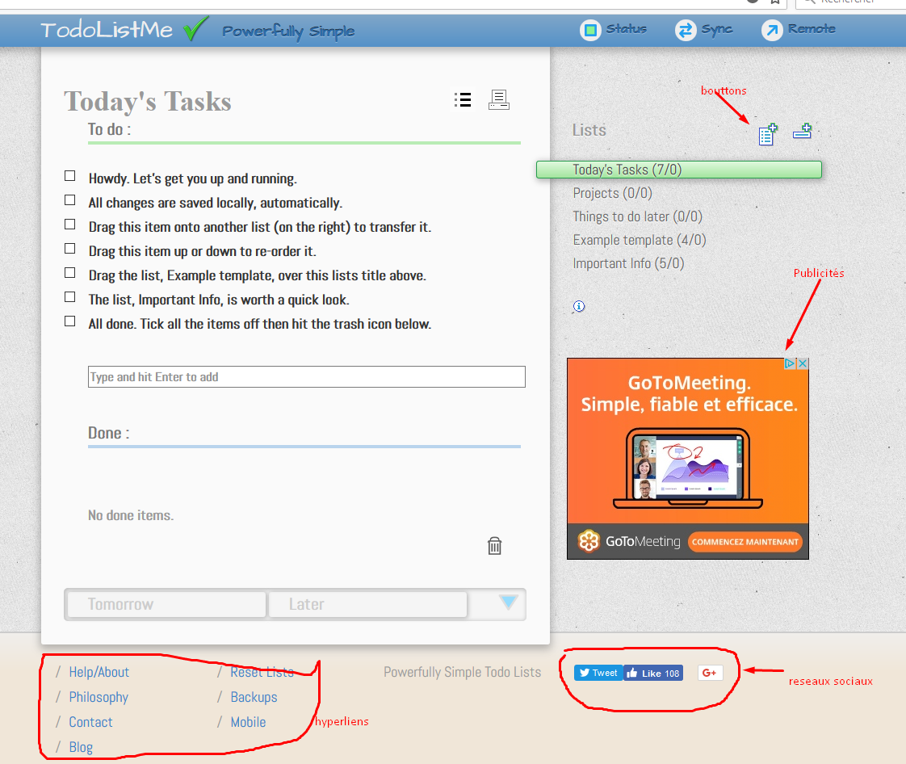
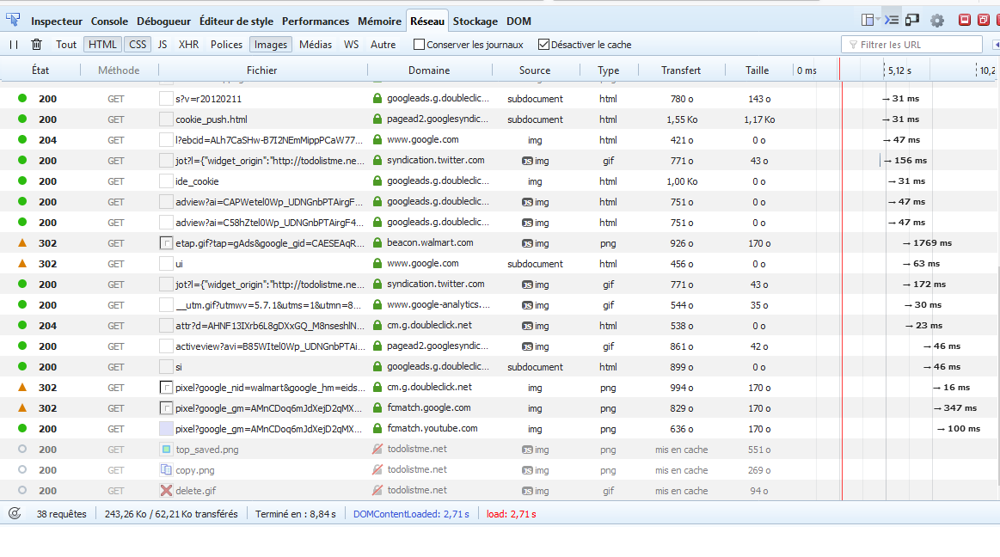
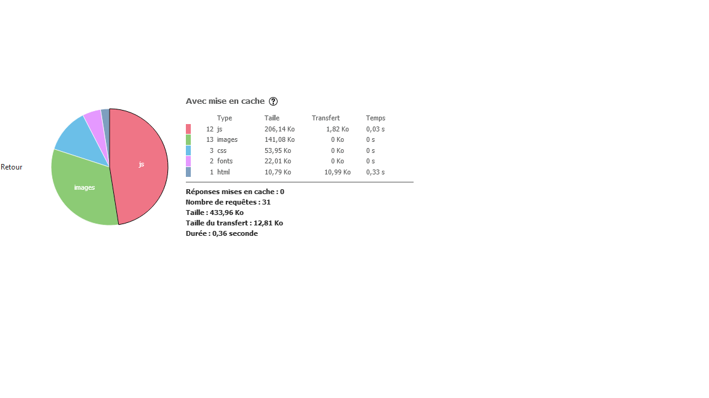
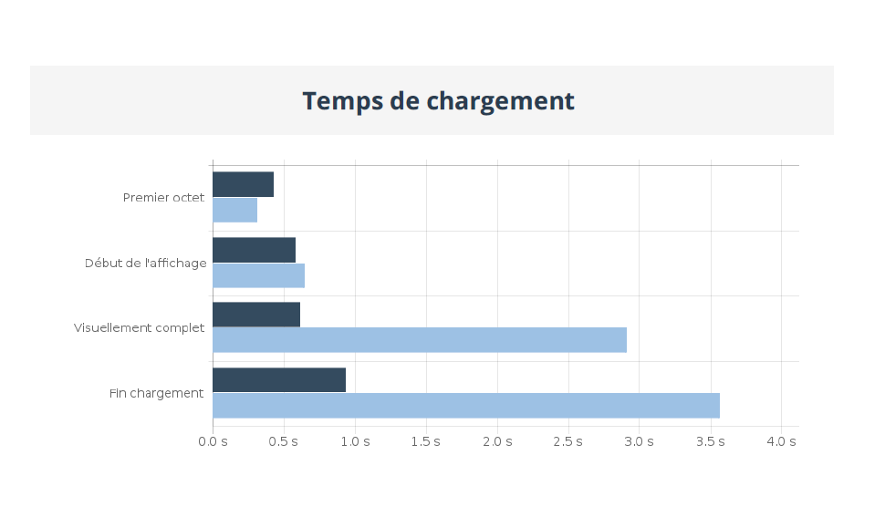
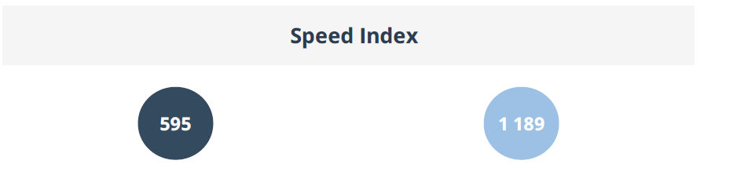
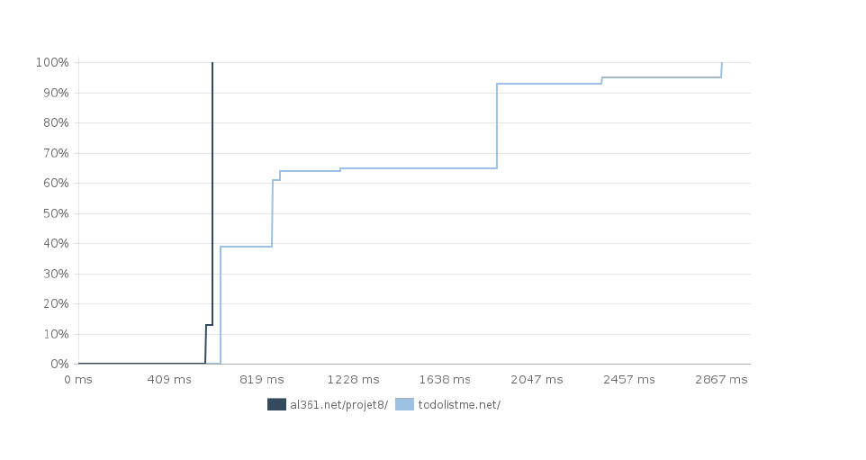
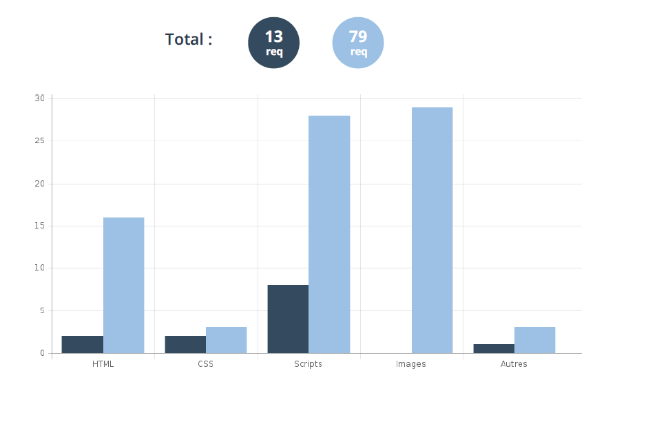
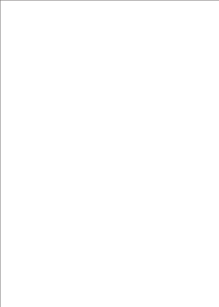

Nous voyons que ce site utilise :
des catégories de liste de tâches
des listes de tâches (créer, sauver, renommer, supprimer)
l’affichage de publicités
des liens hypertextes (aide, blog, contact , …)
des liens vers les réseaux sociaux
des boutons
une présentation riche (cadre, couleurs, ombrage)

Nous voyons que le chargement de la page :
Prend 8,84 secondes
Utilise 38 requêtes
Le navigateur charge 243,26 ko
Réalise des redirections d’Url (http 302 get)
 Les fichiers JS arrivent en termes de poids en 1ere position avec un chargement de 206,14 Ko.
Les images arrivent en 2eme position avec 141,08 Ko.
Les fichiers CSS représentent une infime partie avec 53,95 Ko.
En suivant les instructions sur les sites : https://jscompress.com/
Et https://csscompressor.com/ il est possible de « minifier » la totalité des fichiers JS et CSS.
Cela réduira le poids des fichiers (suppression des espaces et commentaires).
Cette méthode peut permettre de gagner jusqu’à 20% de vitesse de chargement des pages.
Privilégier le format « JPG » quand il n’y a pas de transparence dans l’image.
Utiliser le format « PNG » quand il y a de la transparence dans l’image.
Autant que possible, il faut regrouper les images de même taille dans une feuille de Sprites (Sprite Sheet).
Les Sprites CSS sont une façon de se servir d'une seule et même image qui en « contient » plusieurs, en n'affichant que ce qui nous intéresse.
(Voir https://openclassrooms.com/courses/bien-utiliser-les-sprites-css)
Cela permettra de limiter les requêtes http et potentiellement limiter le transfert global.
Nous allons comparer les deux sites : https://al361.net/projet8/ et http://todolistme.net/.
Pour cela j’utilise le logiciel de comparaison de sites Dareboost.

Le site https://al361.net/projet8 se charge beaucoup plus vite : c’est logique vu que sa présentation est très pauvre par rapport au site http://todolistme.net/.
Le site http://todolisteme.net prend plus de temps au chargement pour les causes suivantes :
Charge des pages de publicités (le temps de réponse varie en fonction du serveur appelé)
Appel des liens vers réseaux sociaux (peut passer par plusieurs serveurs d’où temps de réponse plus long)

Indice de performance qui retranscrit la vitesse d'affichage de la partie visible sans scroll d'une page web.
Plus l'affichage de cette zone est rapide, plus le Speedindex est petit. Recommandation Google : moins de 1000.

Le site https://al361.net/projet8 charge tout d’un coup alors que le site http://todolistme.net/ charge par pallier.

Notre site est très pauvre en présentation. On voit sur ce graphe qu’il n’utilise aucune image.
|
Site :http://todolistme.net/ |
|
|
Rapide, performant |
Chargement lent |
|
Design pauvre |
Design riche |
Minifier les fichiers js
Ajouter catégorie liste de tâches
Ne pas autoriser la création de titres identiques
Ne pas autoriser dans la création du titre les caractères spéciaux: &/*('(_ç')
Trier les listes par alphabet
Améliorer l’affichage (caractères, couleurs)
